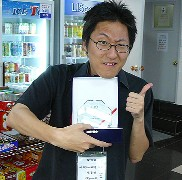

Topic 。
（07）シンリン杯 麻雀選手権
あさみ 投稿日：2010/06/09(Wed)現在 韓国ではいくつかの麻雀団体が結成され、それぞれの団体が独自のルールでリーチ麻雀を楽しんでいるという状況です。また他団体同士の交流も盛んに行われています。先般、その団体同士の交流戦が行われました。その内容や結果を紹介します。
ロボカイ 投稿日：2010/06/08(Tue)こんにちわ、ロボカイです。
この間、新林（シンリン）雀荘杯第４回交流戦が行われました。大会の内容や結果を紹介します。
2010年6月6日、シンリン雀荘（リーチボードカフェ）で韓国麻雀連盟主催の第4回交流戦(リーチボードカフェvsルビックス)が行われました。ルールはアリアリで赤ドラ無し、アガリ連荘。半荘４回戦（つまり32ゲーム）で行われました。参加メンバーはシンリン雀荘の15名（麻雀100 ＆ シンリン雀荘日本ルールクラブ）、シンチョン雀荘（ルビックス）の11名、その他クラブの6名。計32名で8テーブル（自動卓４、手積み卓４）。結果は、優勝：TENPAI（テンパイ)さん（ルビックス所属）、準優勝：Ryuseiさん（リーチボードカフェ所属）でした。
優勝 準優勝最高点トップ賞：Dangli（ダンリ）さん（リーチボードカフェ所属）
最低点トップ賞：テンパイさん。
役満和了賞：Dangli（ダンリ）さん（大三元）左、Pekoeさん（国士無双）右。